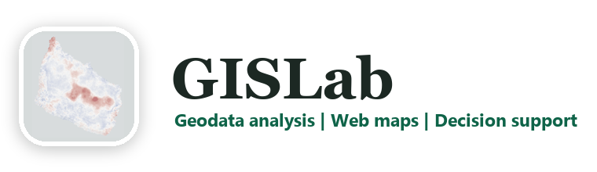

Geografi
Välj och kombinera områden
Utforska regionala avgränsningar och växla mellan delområden för att se hur kartutsnittet och det valda området förändras.

GISLab / Pågående projekt
En interaktiv regionkarta för att utforska geografiska avgränsningar och befolkningsmönster. Greater Copenhagen är ett av områdena som ingår i projektet.
Prototypen kräver för närvarande ChatGPT-inloggning. Projektet är under utveckling och funktioner och underlag kan förändras.
Regional analys över gränser
Greater Copenhagen omfattar områden på båda sidor av Öresund. I kartans områdesval ingår Region Hovedstaden, Region Sjælland, Skåne län och Hallands län. Delområden kan kombineras för att utforska den geografi som är relevant för en viss fråga.
Geografi
Utforska regionala avgränsningar och växla mellan delområden för att se hur kartutsnittet och det valda området förändras.
Befolkning
Visa modellerad befolkning i rutor eller som värmekarta. Färgskalor och transparens ger olika sätt att läsa befolkningens geografiska fördelning.
Kommunikation
Prototypen har export för SVG och PNG samt utskrift till PDF, så att kartor kan användas i presentationer och diskussioner.
Från geodata till webbverktyg
Projektet visar hur regionala data kan bli ett interaktivt verktyg för analys och kommunikation. Liknande arbetssätt kan användas inom samhällsplanering, regional utveckling och forskning.
GISLab drivs av Henrik Aldén i Simrishamn på Österlen. Jag tar uppdrag i Skåne, Greater Copenhagen, övriga Sverige och internationellt.
Kontakta Henrik om GIS-analys och interaktiva webbkartor →